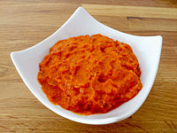

Macedonian AJvar

Аjvar is a the favorite Macedonian traditional peppers dish which marks the beginning of fall/winter season. It's a spread made of red peppers, but not any red peppers, but the Macedonian variety of red peppers named "ajvarka".
Ajvar is known as an ideal companion to cold winters, it's a food that has no adequate replacement, and in combination with cheese, it creates irreplaceable and unique pleasure in your mouth. Similar to ajvar (which I call them ajvar's brothers) are malidzano and lutenica, also very popular products from Macedonia.
Ingredients
- 20 kg red peppers
- 10 pieces of eggplant
- 2l oil
- 200g sugar
- salt to taste
Preparation
- Bake pepper on a hotplate or on a stove, peel and clean seeds.Leave cooled peppers to drain and continue with work in several hours.
- Then, bake eggplants, peel and drain. Grind drained peppers and eggplants in a meat grinding machine and place the mixture into a large pot and start to cook. Add vinegar and sugar and stir.
- Fry around 30 minutes. Stir continuously with a large wooden spoon and after 30 minutes gradually add the oil and stir constantly. Note that oil should not be visible on top. Fry for another 1 hour.
- Add salt to taste twenty minutes before finishing.
- How to know if ajvar is ready? While stirring, if your big spoon leaves a trail at the bottom so you can see the bottom of the pot, then, you know that ajvar is ready. Overall cooking time should be around 90 minutes.
- Prepare the jars while ajvar is still cooking. Heat them in an oven at 50 C degrees. Fill jars with ajvar after removing from heat. Jars should be hot and ajvar should be also hot. Close well the lids. Keep jars in a dark place.
- Homemade ajvar is ready to eat! Take a piece of cheese and warm bread and your appetizing fun can begin!